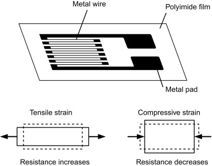
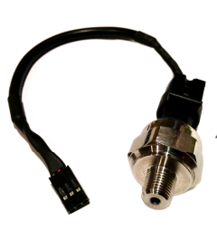

What are the different types of pressure measurement methods and pressure-sensing technologies and how do they work in pressure measurement?
Get to know the functionalities and capabilities of various pressure sensors in this comprehensive guide.
Pressure Sensors are manufactured in the U.S. by FUTEK Advanced Sensor Technology (FUTEK), a leading sensor manufacturer of pressure transducers, utilizing one of the most advanced technologies in the Sensor Industry: Metal foil strain gauge technology.
A pressure sensor is defined as a transducer that converts an input mechanical pressure into an electrical output signal (pressure sensor definition).
There are several types of pressure sensors based on size, capacity, measurement method, sensing technology and output requirements.
Pressure Sensor
A pressure sensor is a transducer or instrument that converts an input mechanical pressure in gases or liquids into an electrical output signal.
A pressure transducer consists of a pressure-sensitive element that can measure, detect or monitor the pressure being applied and electronic components to convert the information into an electrical output signal.
Pressure is defined as the amount of force (exerted by a liquid or gas) applied to a unit of “area” (P=F/A), and the common units of pressure are Pascal (Pa), Bar (bar), N/mm2 or psi (pounds per square inch).
Pressure sensors often utilize piezoresistive technology, as the piezoresistive element changes its electrical resistance proportional to the strain (pressure) experienced.
How does a pressure sensor work?
To understand how a FUTEK industrial pressure sensor works, firstly, one needs to grasp the underlying physics and materials science behind the pressure sensor working principle and piezoresistive effect,
which is measured by the strain gauge (sometimes referred to as a strain gage). A metal foil strain gage is a transducer whose electrical resistance varies with applied force.
In other words, it converts force, pressure, tension, compression, torque, and weight (aka weight sensors) into a change in electrical resistance, which can then be measured.
Strain gauges are electrical conductors tightly attached to a film in a zigzag shape. When this film is pulled, it — and the conductors — stretches and elongates.
When it is pushed, it is contracted and gets shorter. This change in shape causes the resistance in the electrical conductors to also change. The strain applied in the load cell can be determined based on this principle,
as strain gauge resistance increases with applied strain and diminishes with contraction.

Structurally, a pressure sensor is made of a metal body (also called flexure) to which the metal foil strain gauges are bonded. These force measuring sensors body is usually made of aluminum or stainless steel,
which gives the sensor two important characteristics: (1) provides the sturdiness to withstand high loads and (2) has the elasticity to minimally deform and return to its original shape when the force is removed.
A pressure sensor converts pressure into an electrical signal. FUTEK industrial pressure sensors utilize the piezoresistive effect, which comprises of metal foil strain gauges mounted onto a diaphragm.
As pressure changes, the diaphragm changes shape, causing the resistance in the strain gauges to change, allowing the pressure changes to be measured electrically. Our pressure sensors naturally produce an electrical signal in millivolts
that varies proportionally with the load and the sensor excitation voltage (mV/V - millivolt per volt). However, we offer pressure sensors with internal analog amplifiers. The pressure sensors with built-in amplifiers generate signals either in varying voltage,
i.e. ±10V, or varying current, i.e. 4-20 mA. However, if your application requires a digital or USB pressure sensor amplifier, please refer to our force sensors instruments and Amplifiers store page.
The strain gauges are arranged in what is called a Wheatstone Bridge Amplifier Circuit (see below animated diagram). This means that four strain gages are interconnected as a loop circuit and the measuring grid of the force being measured is aligned accordingly.
The strain gauge bridge amplifiers provide regulated excitation voltage and convert the mv/V output signal into another form of signal that is more useful to the user. The signal generated by the strain gage bridge is a low strength signal and may not work with other components of the system,
such as PLC, data acquisition modules (DAQ) or computers. Thus, pressure sensor signal conditioner functions include excitation voltage, noise filtering or attenuation, signal amplification, and output signal conversion.
DATASHEET
There are a variety of pressure-sensing technologies or sensing principles capable of transducing pressure into a measurable and standardized electrical signal.
This article will focus on the force collector types, which are the ones that use a force gauge (i.e. diaphragm) to measure strain (or deflection) due to applied force over an area (pressure).
Resistive or piezoresistive effect: Resistive pressure sensors utilize the change in electrical resistance of a strain gauge bonded to the diaphragm (also known as a flexure element) that is exposed to the pressure medium.
The strain gauges often comprise of a metal resistive element on a flexible backing bonded to the diaphragm (i.e. metal foil strain gage), or deposited directly using thin-film processes.
Normally, the strain gauges are connected to form a Wheatstone bridge circuit to maximize the output of the sensor and to reduce sensitivity to errors. This is the most commonly employed sensing technology for general-purpose pressure measurement and uses the same principle of how a load cell works.

Capacitive: Capacitive pressure sensors use a diaphragm that is deflected by the applied pressure to create a variable capacitor to detect strain due to applied pressure. As pressure is applied, the external force compresses the diaphragm, and the capacitance value decreases.
As the pressure is released, the diaphragm returns to its original shape and capacitance follows. Common technologies use metal, ceramic, and silicon diaphragms. The capacitance can be calibrated to provide accurate pressure reading.
Capacitive sensors, which display a capacitance change as one plate deflects under applied pressure, can be highly sensitive and withstand large overloads. Constraints on materials, and joining and sealing requirements, however, can restrict applications.
Piezoelectric effect: Piezoelectric pressure sensors utilize the property of piezoelectric materials like ceramic or metallized quartz, to generate an electrical potential on the surface when the material is subjected to mechanical stress and strain is generated.
The charge magnitude is proportional to the load applied, and the polarity is defined by the force direction. The electrical potential accumulates and dissipates quickly as pressure changes, allowing measurement of fast-changing dynamic pressures.
Please note that piezoelectric effect is different from piezoresistive effect. Although both terminologies are associated to the effects of pressure applied on materials (piezo is derived from the Greek word for physical pressure),
piezoresistive effect is related to the change in the electrical resistance while piezoelectric effect is related to the production of electrical potential (voltage charge) in the material.